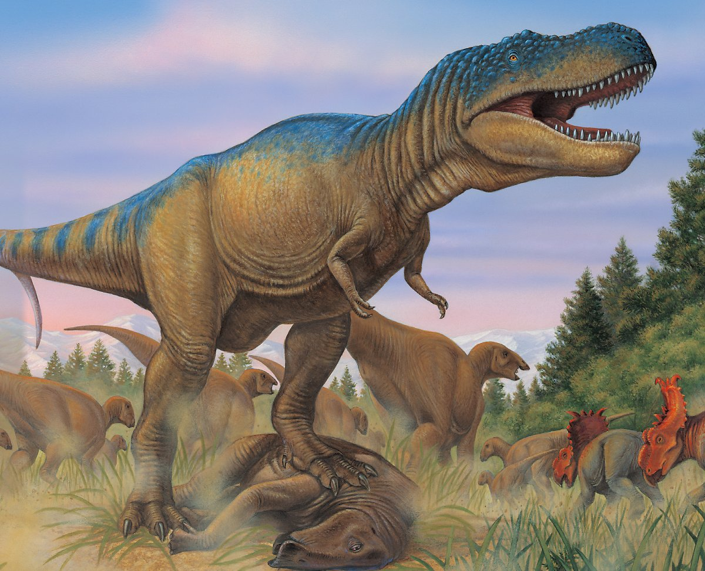
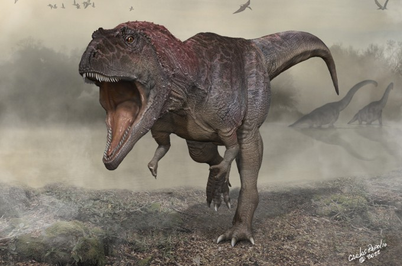
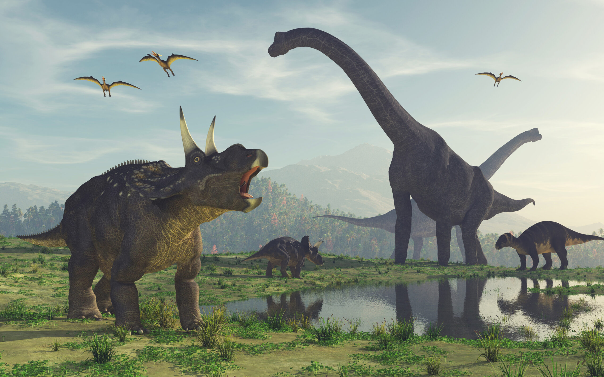

<!DOCTYPE html>
<html lang="en">
<head>
    <meta charset="UTF-8">
    <meta http-equiv="X-UA-Compatible" content="IE=edge">
    <meta name="viewport" content="width=device-width, initial-scale=1.0">
    <title>Document</title>
    <style>
        /* 이동
        translate 

        .movex:hover {
            transform: translateX(50px);
        }

        .movey:hover {
            transform: translateY(50px);
        }

        .movexy:hover {
            transform: translate(10px,20px);
        } */

        /* 확대/축소 
        scale */
        /* 회전
        rotate 

        .origin{
            width: 210px;
            height: 200px;
            border: 1px solid black;
            border: 1px solid black;
            margin: 40px;
            float: left;
            perspective: 900px; /*원근감
        }
/*
        .scalex:hover{
            transform: scaleX(1.2); /*1은 100%를 의미 /1.2는 120%
        }

        .scale:hover{
            transform: scaleY(1.2);
        }

        .scale:hover{
            transform: scale(0.7);
        } 

        .scalex:hover{
            transform: rotateX(45deg);
        }

        .scale:hover{
            transform: rotateY(45deg);
        }

        .scale:hover{
            transform: rotateZ(45deg);
        } */

        /* 변화
            transition-xxx 

            .tr1{
                width: 100px;
                height: 100px;
                background-color: lightblue;
                /*transition-property: width, height; /*변화를 줄 속성을 지정 
                transition-duration: 5s, 1s ; /*변화를 주는 시간 높이는 1초간 커지고 너비느 2초간 커진다
                transition-property: background-color, transform, width, height; 
                transition-duration :2s,3s;   
                transition-delay: 1s;
            }

            .tr1:hover{
                width: 200px;
                height: 200px;
                background-color: orange;
                transform: rotate(180deg);
            }*/


            div{
                width: 100px;
                height: 100px;
                background-color: aqua;
                animation-name: change-bg;
                animation-duration: 3s;
                animation-delay: 1s;
            }

            @keyframes change-bg {
                
                /* from ~ to  */
                from {
                    background-color: aqua;
                    border: 1px solid black;
                }
                to{
                    background-color: blue;
                    border: 2px double yellowgreen;
                    border-radius: 50%;
                }

                /* 0% ~ 100% */
                0%{

                }

                50%{

                }

                100%{

                }
            }

    </style>
</head>
<body>

    <div></div>
    <div class="tr1">
    </div>
<!--
    <div class="origin">
        <div class="scalex">
            
        </div>
    </div>
    <div class="origin">
        <div class="scale">
            
        </div>
    </div>
    <div class="origin">
        <div class="scale">
            
        </div>
    </div>
    -->
</body>
</html>